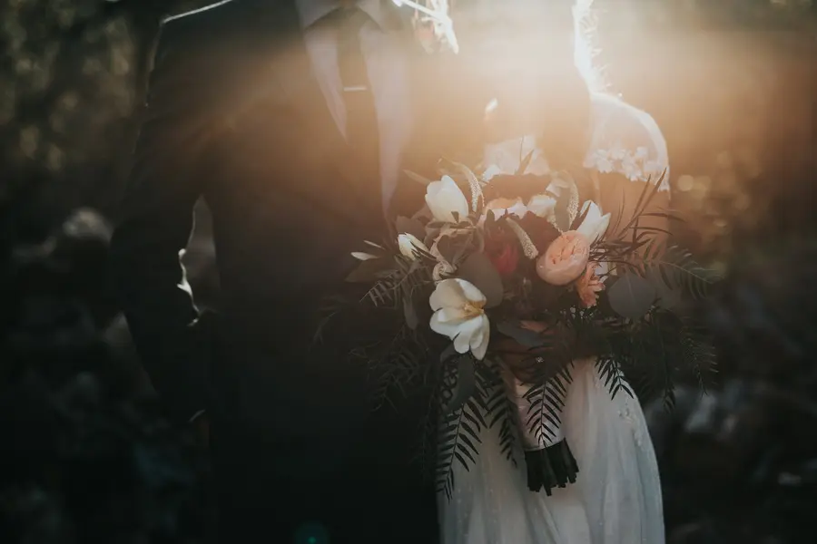

Family portrait · Aigburth, Liverpool · October 2025
The Neef Studios portfolio
Four commissions from the last year: a family portrait session in Aigburth, a Liverpool wedding covered in photography and film, a brand campaign for a Baltic Triangle coffee roastery, and a documentary following the traders of Great Homer Street market before dawn.
Selected stories
Showing all 4 projects.
Family portrait · Aigburth, Liverpool · October 2025

Wedding · Liverpool · June 2026

Brand campaign · Baltic Triangle, Liverpool · March 2026

Documentary · Great Homer Street, Liverpool · February 2026
We’d love to hear what you have in mind. Ask about this kind of project
Every commission here is published with the client’s permission. Where a client prefers privacy, details are kept general and their images stay in a private gallery.
Every story starts somewhere
Tell us about the people, moment or message you want us to capture.
Tell us your story